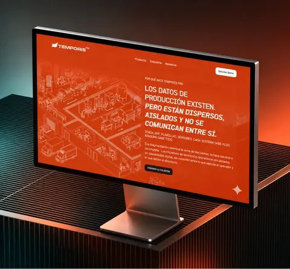
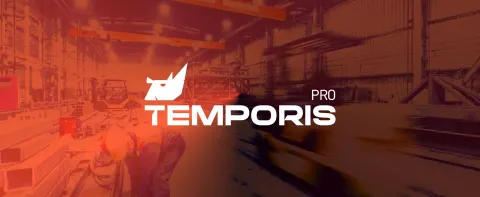
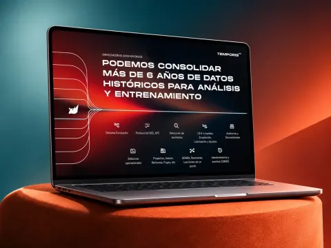
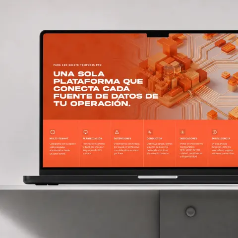
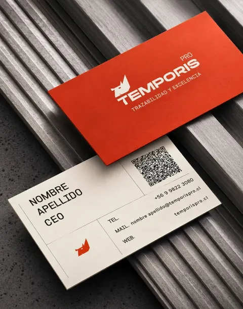
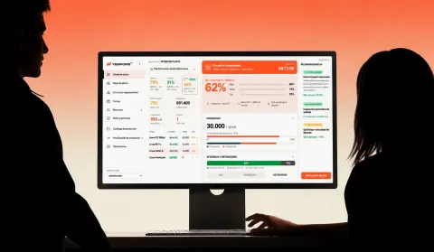
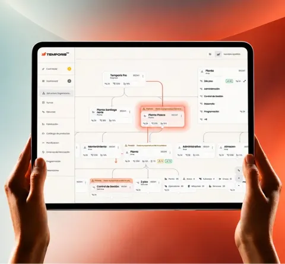
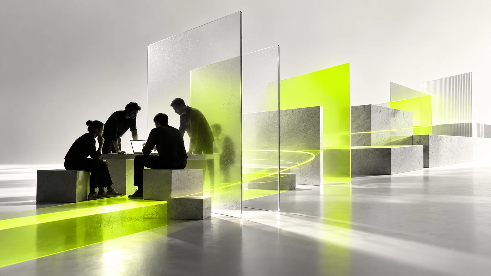

Design system
Inventario de luisdesign.cl a partir de css/styles.css e css/inicio.css (20 de noviembre de 2026). Los componentes de esta página usan las clases reales del sitio, así que se ven igual que en producción. Página interna: no se publica.
Inconsistencias pendientes
Lo que falta ordenar. Ya se resolvieron las etiquetas, el color de acento, los negros, los botones, los radios, la escala de títulos, la de texto y el «+» de las preguntas frecuentes.
- Restos de la versión anterior
La fuente Anton se sigue cargando (styles.css) aunque solo la usa el inicio alternativo (index-v2). Los tokens --glow, --frost y --shadow-glass vienen de Frost Glass y casi no se usan.
Propuesta: quitar Anton de styles.css si index-v2 ya no se usa.
Color
Paleta ordenada el 20 de noviembre de 2026: neutros sin tinte (antes eran grises azulados de la maqueta Frost Glass) y la marca en el espectro flúor. Todos los colores viven como tokens en :root de styles.css; ya no quedan lima, crema ni negros escritos a mano en styles.css e inicio.css.
Marca · flúor
- --lima-soft / --accent-soft / --glow #f2ffc9 · fondos suaves, halos nuevo
- --lima / --accent #d4ff3f · rellenos, resaltes, subrayado del menú
- --lima-mid / --accent-mist #b5d92a · detalles decorativos (viñetas, líneas) nuevo
- --lima-deep #7fa015 · tono intermedio entre --lima-mid y --accent-ink; foco del teclado, íconos y gráficos (3.0:1, no para texto pequeño) nuevo
- --accent-ink #4a6600 · texto e íconos de acento sobre blanco (6.6:1) nuevo
Neutros claros
- --frame / --surface #ffffff · fondo y tarjetas
- --surface-sunken #f3f3f3 · etiquetas, campos
- --canvas #efefef · fondos de sección
- --frost #ebebeb · botón secundario
- --canvas-deep #e2e2e2 · hover de etiquetas
- --line #e2e2e2 · bordes
- --line-control #858585 · bordes de campos, «/» de la ruta (3.7:1)
Texto
- --ink #0a0b0d · texto, foco del teclado (19.7:1)
- --ink-muted #5e5e5e · texto secundario (6.5:1)
- --ink-subtle #6b6b6b · contadores, notas (5.3:1)
Oscuros
- --night #07090d · fondos oscuros, botón primario, cookies
- --night-glow #1d1f22 · brillo del degradado del hero nuevo
- --cream #f1eee6 · texto sobre oscuro nuevo
- --success #1f7a55 · confirmaciones
Tipografía
Dos familias: Plus Jakarta Sans para títulos (h1 a h4) y navegación, y la monoespaciada del sistema para párrafos de casos, rótulos y etiquetas.
Escala tipográfica, de mayor a menor
Títulos en Plus Jakarta Sans (H1 a H3); H4, H5 y textos en la monoespaciada con espaciado .08em. El color lo pone el contexto: gris o negro en fondo claro, crema en fondo oscuro.
Temporis Pro
H1 · título de páginaJakarta 800 · mayúsculas · clamp(44–128 px) · .9 · −0.055em
casos, Proyectos, Sobre mí, privacidad, artículos
Lecturas para tu negocio
H2 · título de secciónJakarta 800 · mayúsculas · clamp(30–68 px) · .95 · −0.045em
secciones del inicio, formulario, secciones de casos
¿Cuándo es momento de trabajar tu marca?
H3 · subtítulo y tarjetaJakarta 600 · clamp(20–24 px) · 1.2 · −0.02em
tarjetas del blog, apartados de artículos y de la política
Cuando nace
H4 · subtítulo de blogmonoespaciada de la bajada (.pl-lead) · 20 px · mayúsculas · 1.4 · .08em · en --ink
apartados dentro de los artículos (h2 en .narrow.prose)
Cookies y analítica
H5 · título menormonoespaciada 600 · 14 px · 1.5 · .08em (como el texto, en negrita)
aviso de cookies, etapas de Sobre mí, h3 dentro de artículos
En mi experiencia, trabajar una marca no es algo que ocurre una sola vez.
Cita destacada · Textomismo estilo que el texto, en --ink y con línea --lima-deep de 2 px
citas dentro de los artículos
Marcas, sitios y productos digitales para pymes y empresas en Chile.
Texto · 14 pxinterlineado 1.75
bajadas bajo los títulos, introducciones, artículos y política de privacidad
Temporis Pro nace de la integración de dos softwares y servicios que ya estaban en funcionamiento.
Texto pequeño · 12 pxinterlineado 1.75 (1.25 en móvil en los casos)
párrafos de casos y textos de tarjetas
Servicio
Rótulo · 12 px · mayúsculasinterlineado 1.5
encabezados de grupo: filtros, columnas del pie, «En esta página»
interlineado 1.5
ruta, años, datos de ficha, autor, fechas, índice
Fuera de la escala, a propósito: el título del hero del inicio, el cierre «Tu próximo proyecto empieza acá» y el titular de Ideas, que son composiciones con tamaño y movimiento propios. En las fichas de proyecto antiguas el H1 se limita al ancho de su columna. El nombre de proyecto en las tarjetas usa el estilo H5. Los apartados de la política de privacidad usan H3.
Etiquetas
Seis variantes para lo mismo. La referencia es .pj-chip (filtros de Proyectos): píldora sin borde, gris claro, monoespaciada de 12 px. Hover con flúor suave, click con flúor y activa en negro.
Componente de referencia: .pj-chip · estados sobre fondo claro
Los estados de hover, click y foco se muestran fijos para compararlos; en el sitio aparecen al interactuar. Pruébalos en la zona punteada junto a cada título.
- Inactiva (por defecto)
--surface-sunken #f3f3f3 · texto --ink · número --ink-subtle - Hover
resaltado suave --lima-soft #f2ffc9 - Click (mientras se presiona)
resaltado flúor --lima #d4ff3f · escala 96 % - Activa (seleccionada)
--ink · texto --on-night · número al 70 % - Activa + hover
--ink al 82 % - Foco del teclado
anillo sólido --lima-deep de 2 px, separado 2 px (3.0:1)
Sobre fondo oscuro
Se aplica dentro de .on-dark o de las secciones oscuras del inicio (.pl-dark).
- Inactiva
crema al 10 % · texto --cream · número --cream-muted - Hover
flúor tenue: --lima al 22 % sobre --night - Click (mientras se presiona)
resaltado flúor --lima · texto --ink · escala 96 % - Activa (seleccionada)
blanco --on-night · texto --ink (inversa de la negra) - Activa + hover
blanco al 85 % - Foco del teclado
anillo sólido --lima-deep de 2 px, separado 2 px
Todas las variantes de etiqueta del sitio
Todas usan la misma base que .pj-chip: píldora sin borde, --surface-sunken, monoespaciada de 12 px, .08em, relleno 6 × 14 px. Sobre imagen van en blanco y sobre oscuro en crema al 10 %.
- Branding.pl-chip · categoría de los artículos del blog (inicio y noticias) unificada
- Estrategia.pj-over-tag · disciplinas sobre la imagen en Proyectos (fondo blanco) unificada
- .case-chips li · disciplinas en el encabezado de cada caso unificada
- Estrategia
- Identidad
- 0102.numtag · numeración de pasos en los casos antiguos (texto --ink-muted) unificada
- Fuchi Chao.alt-tag · nombre de cada proyecto en el portafolio del inicio · hover flúor suave unificada
- .sobre-tags li · herramientas y métodos en Sobre mí unificada
- Ley 21.719.tag / .tag-eyebrow · encabezado de la política de privacidad (con ícono) unificada
- 78.tag-value · valor destacado (index-v2): fondo --ink unificada
- .svc-tags li · sobre fondo oscuro (sin uso en las páginas actuales): crema al 10 % unificada
Botones
Tres variantes, todas píldora (14 px, peso 500, relleno 12 × 20). Estados: inactivo (deshabilitado), default, hover, click, cargando y foco del teclado. El hover se destaca en flúor, el click pasa a negro y el foco lleva el anillo --lima-deep. Sobre fondo oscuro (secciones oscuras del inicio, aviso de cookies, formulario de contacto o .on-dark) el primario se invierte a blanco. «Ver proyecto» en las tarjetas de Proyectos ahora es un .btn-primary.
Primario · .btn-primary
- Inactivo (deshabilitado)
:disabled o aria-disabled="true" · --surface-sunken · texto --ink-subtle · sin sombra - Default
--night · texto blanco · sombra flotante - Hover
flúor --lima · texto --ink - Click (mientras se presiona)
negro --night · texto blanco · escala 97 % - Cargando
aria-busy="true" · el texto se oculta (mantiene el ancho) y gira un indicador de 16 px - Foco del teclado
anillo --lima-deep de 2 px, separado 2 px
Secundario · .btn-secondary
- Inactivo (deshabilitado)
:disabled o aria-disabled="true" · --surface-sunken · texto --ink-subtle · sin sombra - Default
--surface-sunken · sin borde - Hover
flúor --lima · texto --ink - Click (mientras se presiona)
negro --night · texto blanco · escala 97 % - Cargando
aria-busy="true" · el texto se oculta (mantiene el ancho) y gira un indicador de 16 px - Foco del teclado
anillo --lima-deep de 2 px, separado 2 px
Contorno · .btn-outline
- Inactivo (deshabilitado)
:disabled o aria-disabled="true" · --surface-sunken · texto --ink-subtle · sin sombra - Default
blanco · borde --line-control - Hover
flúor --lima · texto --ink - Click (mientras se presiona)
negro --night · texto blanco · escala 97 % - Cargando
aria-busy="true" · el texto se oculta (mantiene el ancho) y gira un indicador de 16 px - Foco del teclado
anillo --lima-deep de 2 px, separado 2 px
Sobre fondo oscuro
Primario · .btn-primary
- Inactivo (deshabilitado)
:disabled o aria-disabled="true" · crema al 6 % · texto crema al 45 % - Default
blanco · texto --ink · sin sombra - Hover
flúor --lima · texto --ink - Click (mientras se presiona)
negro --night · texto --cream · borde crema al 50 % · escala 97 % - Cargando
aria-busy="true" · el texto se oculta (mantiene el ancho) y gira un indicador de 16 px - Foco del teclado
anillo --lima-deep de 2 px, separado 2 px
Secundario · .btn-secondary
- Inactivo (deshabilitado)
:disabled o aria-disabled="true" · crema al 6 % · texto crema al 45 % - Default
crema al 10 % · texto --cream - Hover
flúor --lima · texto --ink - Click (mientras se presiona)
negro --night · texto --cream · borde crema al 50 % · escala 97 % - Cargando
aria-busy="true" · el texto se oculta (mantiene el ancho) y gira un indicador de 16 px - Foco del teclado
anillo --lima-deep de 2 px, separado 2 px
Contorno · .btn-outline
- Inactivo (deshabilitado)
:disabled o aria-disabled="true" · crema al 6 % · texto crema al 45 % - Default
transparente · borde crema al 40 % - Hover
flúor --lima · texto --ink - Click (mientras se presiona)
negro --night · texto --cream · borde crema al 50 % · escala 97 % - Cargando
aria-busy="true" · el texto se oculta (mantiene el ancho) y gira un indicador de 16 px - Foco del teclado
anillo --lima-deep de 2 px, separado 2 px
Radios
Estructura de formas de Apple (iOS 26 y 27): cada esquina pertenece a uno de tres tipos. Así los elementos anidados quedan alineados y no hay radios sueltos.
1 · Cápsula
Radio = mitad de la altura (--radius-pill). Para todo lo que se pulsa o es una barra: botones, etiquetas, indicadores y barras de progreso.
- Botones · --radius-pill
- Etiquetas · --radius-pill
- Barras e indicadores · --radius-pill (antes 2 y 6 px)
2 · Fija
Una escala para contenedores e imágenes que no están dentro de otro contenedor redondeado.
- --radius-2xs 2 px · detalles mínimos (cuadrado de la marca)
- --radius-xs 6 px · muestras pequeñas
- --radius-sm 8 px · campos, enlaces del menú; mínimo de los concéntricos
- --radius-md 12 px · imágenes en móvil, íconos, submenú
- --radius-lg = --radius-image 20 px · imágenes de proyectos y artículos (tarjeta y caso)
- --radius-xl 28 px · tarjetas y contenedores
- --radius-2xl 40 px · retrato
- --shell-inner-radius 20–32 px · secciones del marco (oscuras, cookies, menú móvil)
3 · Concéntrica
Dentro de un contenedor redondeado, el radio interior es el del contenedor menos su relleno: max(--radius-sm, --r-outer − --r-pad). El contenedor declara --r-outer y --r-pad. Se usa en las tarjetas del blog y en las tarjetas de proyecto.
- Tarjeta del blog · contenedor --radius-xl (28 px) con relleno de 8 px → imagen 20 px
- Error que evita · mismo radio dentro y fuera (28 px): la esquina interior se ve más gruesa no
Corregido
Las imágenes de las tarjetas de Proyectos pasaron de 8 a 20 px, igual que dentro del caso (12 px en móvil en ambos). Los valores escritos a mano (2, 6, 7, 9 y 12 px) ahora son tokens; las barras pasaron a cápsula.
Espaciado
Escala de 4 px. Se respeta bastante; las separaciones grandes entre bloques usan clamp() propios.
- --space-1 4 px
- --space-2 8 px
- --space-3 12 px
- --space-4 16 px
- --space-5 20 px
- --space-6 24 px
- --space-8 32 px
- --space-10 40 px
- --space-12 48 px
- --space-16 64 px
- --space-24 96 px
Elementos visuales
Fondos, imágenes, líneas, sombras y cursor: todo lo que no es texto ni componente. Las muestras usan las mismas clases y tokens que el sitio.
Fondos
- Marco · --frame (blanco)
fondo general de todas las páginas - Panel · degradado vertical --canvas → --canvas-deep · radio --shell-inner-radius
cabeceras de artículos y política de privacidad (.panel, .shell-body) - Cuadrícula · líneas de 1 px cada 64 px en --line-control al 26 %, desvanecidas con una máscara radial
.frame-grid; se ubica con --grid-at y --grid-size (Proyectos, Sobre mí, cabeceras) - Sección oscura · degradado --ink → --night con brillo --night-glow abajo a la derecha · texto crema
hero y producto del inicio (.pl-dark), aviso de cookies - Sección gris · --surface-sunken
bloque del blog en el inicio
Imágenes · proporciones
Todas con object-fit: cover y radio --radius-image (20 px; 12 px en celular).
- 4:3 · tarjetas de Proyectos y del blog (.pj-media, .pl-tarjeta-foto)

- 16:9 · portada de cada artículo (.noticia-portada)

- 16:10 · imágenes de las fichas de proyecto antiguas y espacios por llenar (.case-media, .media-ph)

- 7:5 · collage de Ideas en el inicio

- 4:5 · retrato de Sobre mí (radio --radius-2xl)

- Libre · imágenes de los casos a lo ancho (.lab-fig), con su proporción original; los pares se igualan en altura

Imágenes · tratamientos
- Fundido lateral · la imagen se desvanece al 55 % hacia el texto (hacia abajo en celular)

navegación entre casos y «Sigue leyendo» en artículos - Capa sobre imagen · --frame al 65 % con desenfoque de 3 px
tarjetas de Proyectos al pasar el mouse - Zoom suave · escala 104 % en 0.6 s al pasar el mouse
tarjetas de Proyectos (pásale el mouse)
Línea flúor
- Hilo · trazo --lima de 4 px, puntas redondas
recorre el inicio de sección en sección (.pl-thread) y dibuja la firma (.pl-firma) - Cursor · anillo --lima de 2 px, 22 px; 44 px sobre enlaces y botones
solo en el inicio, con mouse
Sombras
- --shadow-card · tarjetas, collage y celdas
- --shadow-float · botón primario sobre fondo claro
- --shadow-glass · brillo interior + sombra (casi sin uso, viene de Frost Glass)
Componentes
Las piezas que se repiten en el sitio, con su marcado real. Etiquetas y botones están en sus propias secciones.
Desplegable de preguntas frecuentes
.faq details.card · tarjeta --radius-lg con borde --line · pregunta en Texto (14 px) · botón «+» en cápsula de 28 px con los estados de la etiqueta: gris, hover flúor suave, click flúor, abierto en negro con «−» y foco con anillo --lima-deep · respuesta en Texto, gris. Uno cerrado y uno abierto: haz clic para probar.
¿Cuándo es momento de trabajar mi marca?
Cuando nace tu negocio, cuando crece, cuando te comparan solo por precio, cuando cambia el rumbo o cuando la gente no sabe bien qué haces. Si te reconoces en alguno, es buen momento.
¿Puedo partir solo con la identidad visual?
Sí. Muchas marcas parten por la identidad y suman estrategia cuando el negocio crece, como Fuchi Chao.
Tarjeta base
.card · --surface · borde --line · --radius-xl (28 px) · --shadow-card. Base de las tarjetas del blog, la navegación entre casos y el desplegable.
Contenido
Tarjeta de artículo
Tarjeta base con relleno de 8 px · imagen 4:3 concéntrica (20 px) con la etiqueta de categoría encima · título H3 · bajada en Texto pequeño. Carrusel del blog en el inicio.

Producto digital
Un buen equipo técnico no basta si nadie ordena el camino
Son señales que se repiten en productos digitales: el cliente pide una cosa, el equipo entrega otra y nadie tiene claro qué construir primero.
Tarjeta de proyecto
.pj-card · imagen 4:3 (--radius-image) · nombre H5 con flecha · al pasar el mouse: capa blanca con disciplinas, año y «Ver proyecto», zoom suave de la imagen. Página de Proyectos.

Navegación entre casos
.case-nav · dos tarjetas (anterior y siguiente) con la imagen fundida hacia el texto. Al final de cada caso.
Menú principal
Enlaces en Jakarta 15 px · página actual y hover con el subrayado flúor (--lima) y un punto debajo · selector de idioma ES / EN. En celular el menú se abre a pantalla completa.
Flechas de carrusel
Dos .btn-secondary cuadrados de 44 px (en cápsula): mismos estados que el botón secundario.
Índice lateral
.toc · rótulo «En esta página» · enlaces en Meta (12 px) con una línea a la izquierda que se marca en --ink al pasar el mouse. Política de privacidad.
Campos del formulario
.pl-field · sin caja: solo una línea inferior crema al 35 % · la etiqueta sube al escribir · al enfocar, la línea pasa a --lima de 2 px. Casilla de consentimiento con color --lima. Formulario de contacto (fondo oscuro).
Aviso de cookies
.cookie-banner · sección oscura con radio --shell-inner-radius · título H5 · texto · botones Rechazar (secundario) y Aceptar (primario) en su versión oscura. Fijo abajo en todas las páginas hasta que se elige.